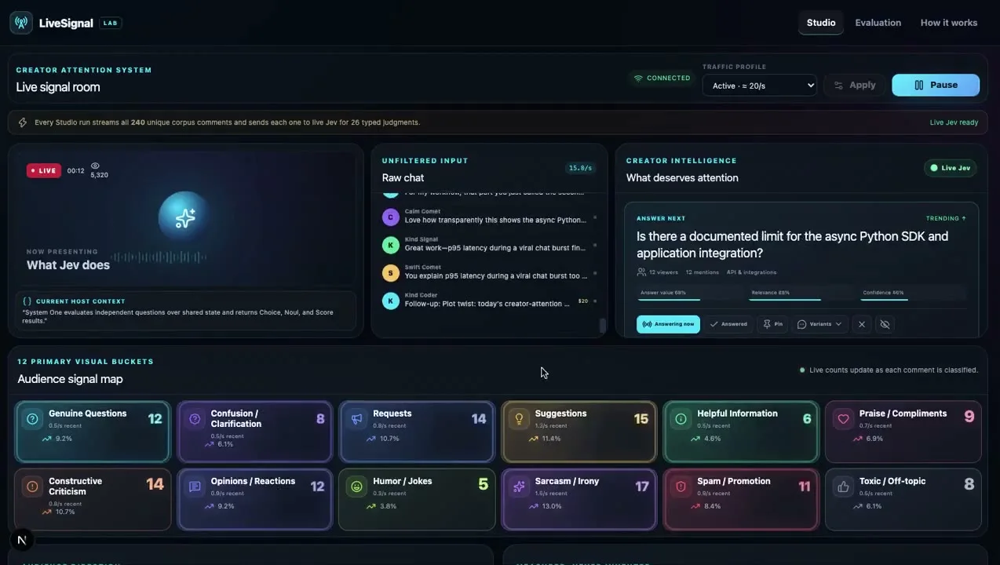
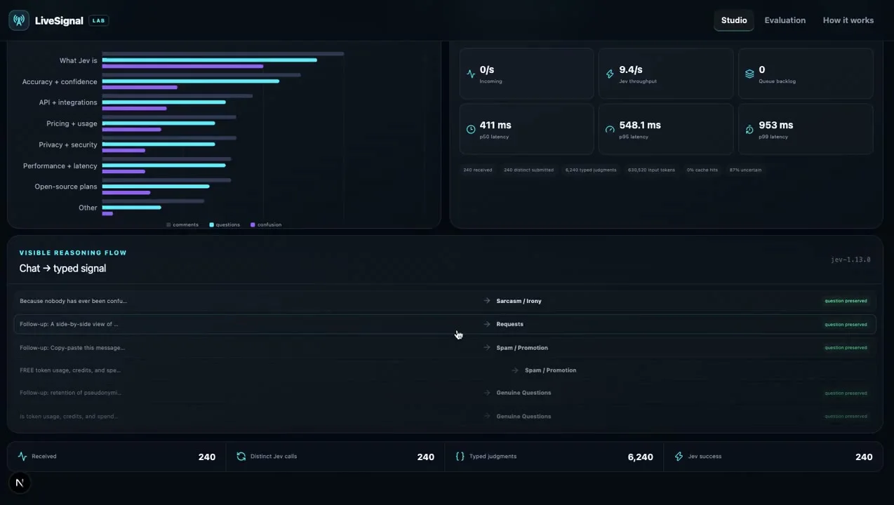

体験
コメントの流れを、配信者が操作できる「答える順」のキューに変換している。分類しても元のコメントを消さず、「question preserved」と示して質問を保つ設計が読み取れる。
- 生チャットとJevの結果が横に並び、判断の根拠に戻れる。
- 回答価値（68%）、関連度（88%）、confidence（66%）が別の項目として並び、混ぜて一つの点数にしていない。
- 各カードの操作ボタンで、配信者が最終判断を持つ。
- 2枚目の下部には p50 411ms、p95 548ms、p99 953ms、そして「87% uncertain」という集計が出る。定義は画面から確認できないが、不確かさを隠さない意図が見える。
キャプチャ
{kind=link}

（原寸の画像を開く）{kind=link}

（原寸の画像を開く）見る箇所生チャット、「Answer next」のカード、12種のバケットの件数、下段の「Chat → typed signal」の流れと遅延の表示
入力から画面の変化まで
-
判断への入力
配信チャットのコメント（Raw chat）と、現在の配信内容（Current host context）。240件を各1回Jevに送り、26個の型付き判断を得ると表示される。
-
Jevの判断
画面の説明は「共有状態に対する独立した質問に、Choice・Noul・Scoreで答える」。各コメントを12種のバケット（Genuine Questions、Requests、Spam / Promotion など）に分け、回答価値・関連度・confidenceも返す。
-
結果がUIをどう変えるか
バケットごとの件数マップ、「Answer next」カード（Answering now / Answered / Pin / Variants / 非表示）、質問トピックの棒グラフ、コメントごとの分類結果と「question preserved」の表示。
- 判断型の見立て
- 複合出典に明記
- 画面の説明に「共有状態に対する独立した質問を評価し、Choice、Noul、Scoreの結果を返す」とある。
Jevとの適合
コメントごとの独立した複数の問いという形はJevの使い方に合う。ただし実配信での応答時間、誤分類の頻度、配信者の負荷は確認できない。
確認範囲と未確認事項
作者の投稿動画からStudio画面を確認。リポジトリは作者が示すが未確認。画面には「240件の固定コーパスのコメントを流す」と表示され、実際の配信ではない。
- 確認済み動画から得た2枚の静止画に見えるバケット、Answer nextカード、遅延・件数の表示、固定コーパスの明記
- 未検証実配信での動作、分類精度、「87% uncertain」の定義、リポジトリの中身
- 推定扱い回答価値・関連度・confidenceが各質問型のどれに当たるか
- 引用X投稿は2026-09-20（UTC）。動画から必要な範囲の静止画を切り出して引用。権利は作者に帰属する